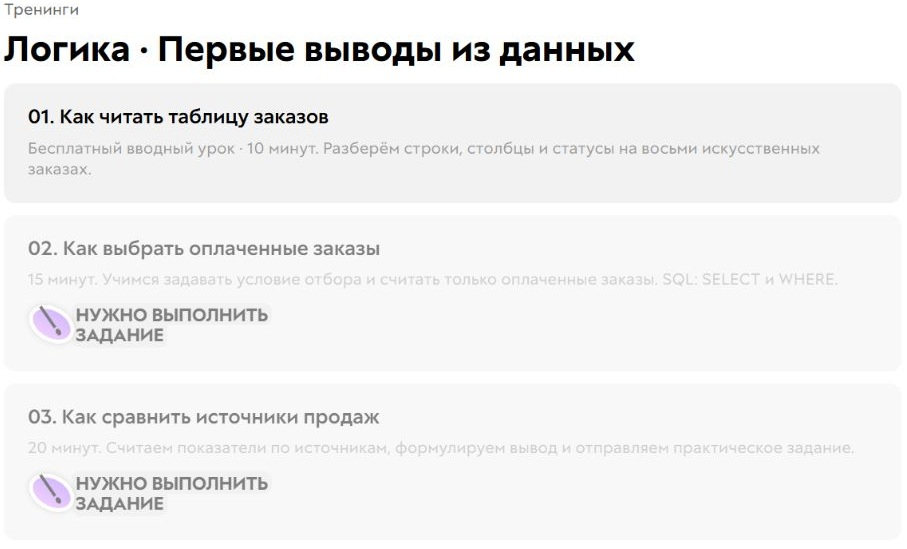
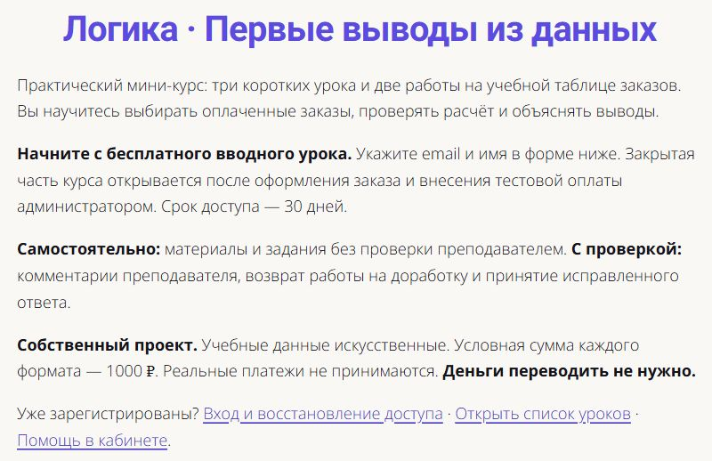
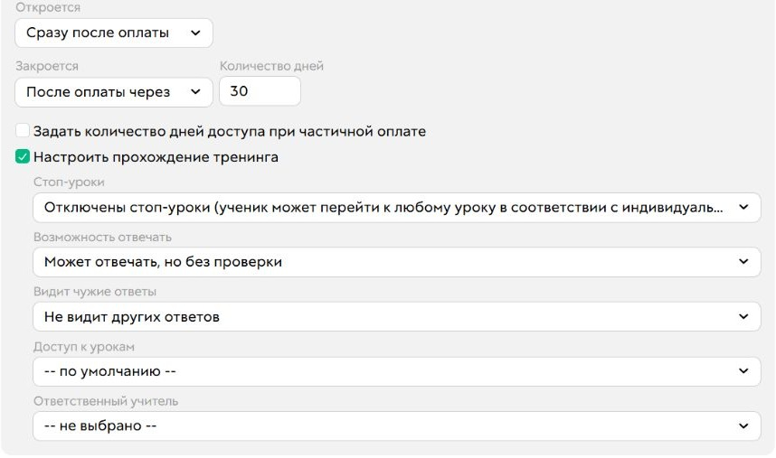
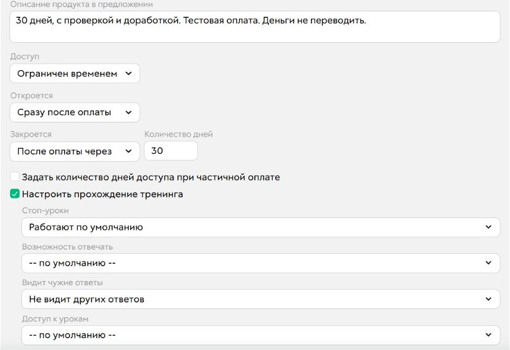
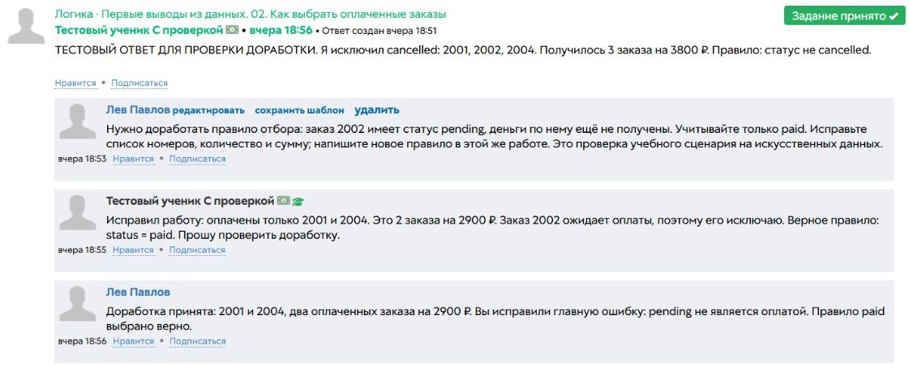
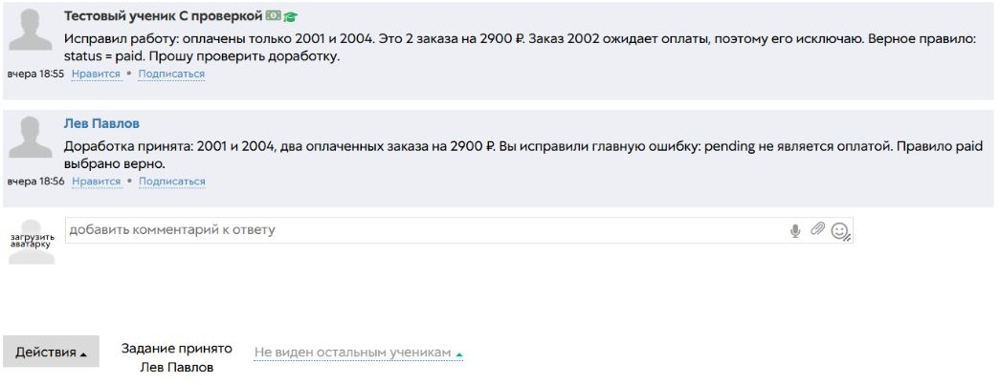
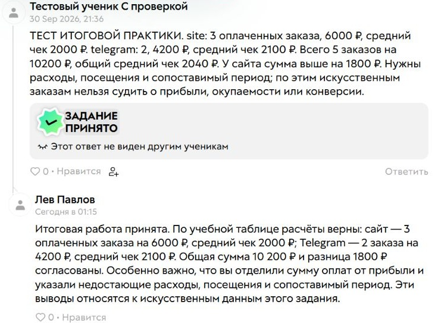
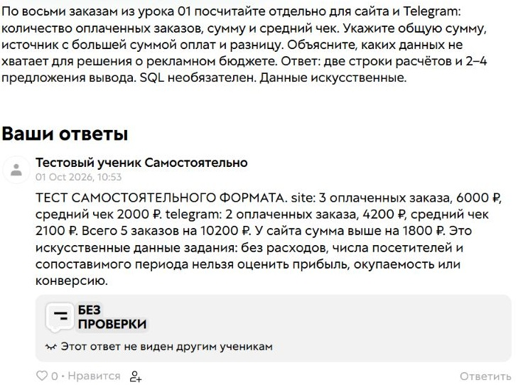
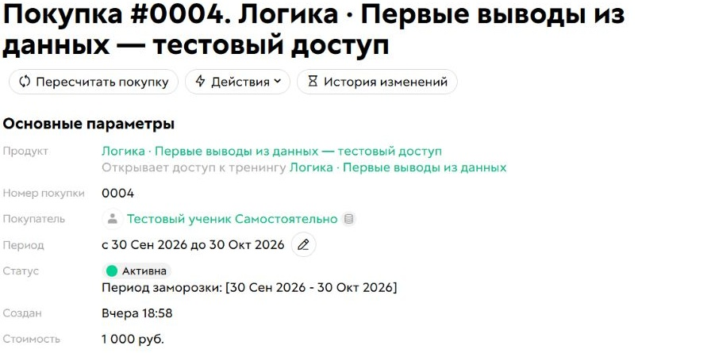

Предложение
Определяет формат и условия обучения.
От первого бесплатного урока до принятой работы. Настроил в GetCourse регистрацию, два формата одного курса, доступ на срок и общение по заданиям. Ниже — реальные экраны и разбор проверенных сценариев.
Состояние на 1 октября 2026. Данные заданий искусственные.

Увеличить снимокКабинет ученика: бесплатное знакомство и закрытая часть курса до выдачи покупки.
Задача — организовать знакомство с курсом, выбор условий, выдачу материалов и работу с ответами. Ученик понимает, что ему доступно; преподаватель видит работу и может объяснить, что исправить.
Это проверенный сценарий формата с обратной связью. Доступ к платной части в этих проверках выдавался после ручной отметки администратора. Автоматическая онлайн-оплата не подключена.
Определяет формат и условия обучения.
Хранит право на материалы и период доступа.
Сохраняет работу, замечания и результат проверки.
Экраны ученика и администратора показаны отдельно. Любой снимок можно открыть целиком и рассмотреть в масштабе 100%. Текст внутри оригинальных снимков — на русском.
Подготовил единый вход: бесплатный материал и два варианта продолжения. Так человеку проще сопоставить условия до заказа. Этот экран пока сохранён внутри GetCourse и не заменяет действующий публичный вход.

Увеличить снимокСохранённый интерфейс выбора форматов. Эта версия страницы ещё не опубликована.
Три урока ведут от чтения таблицы заказов к отбору оплаченных покупок и самостоятельным выводам. Первый материал доступен после регистрации; содержание двух следующих закрыто без покупки — в том числе по прямой ссылке.
До выдачи покупки доступен первый урок. Прямой доступ к урокам 02 и 03 закрыт.
Различие форматов — в обратной связи, а не в двух копиях курса. Срок и приватность задаются условиями предложения. Последовательное открытие после принятия работы здесь не заявляется: общий стоп-урок выключен.
Те же материалы на 30 дней. Проверено: новый итоговый ответ сохраняется «Без проверки» и остаётся приватным.

Увеличить снимокАдминистратор: правила самостоятельного предложения, срок и приватность.
Те же материалы и срок; преподаватель читает работу, даёт замечание и принимает исправление. Ответ скрыт от остальных учеников.

Увеличить снимокАдминистратор: предложение с проверкой человеком. Общий стоп-урок курса выключен.
В практике ученик включил в расчёт заказы, которые ещё ждут оплаты. Преподаватель объяснил, почему нужен статус paid. Ученик исправил расчёт в обсуждении той же работы; история ошибки и решения сохранилась.

Увеличить снимокОшибка → содержательное замечание → исправление → принятие. Числа относятся к учебной таблице.
С администраторской стороны видны исправленный ответ, комментарий и итоговый статус. Доработку проверяет человек; её автоматическое возвращение в очередь здесь не обещается.

Увеличить снимокПринятое задание и комментарий владельца-администратора. Ответ не виден остальным ученикам.
В кабинете ученика остаются принятая итоговая работа и комментарий к расчётам. Обратная связь объясняет не только арифметику, но и пределы вывода: сумма оплат сама по себе не доказывает прибыль или эффективность рекламы.

Увеличить снимокПринятие и комментарий видны ученику. Все суммы на снимке — искусственные данные задания.
Для самостоятельного формата отправлен новый итоговый ответ. После повторного открытия под учеником и владельцем сохранились текст, статус «Без проверки» и приватность.

Увеличить снимокПодтверждён новый итоговый ответ конкретной покупки. SQL в материалах — учебный текст, автоматической проверки SQL нет.
Покупка хранит право на курс и период 30 дней. Проверены окончание срока через изменение дат, ручной отзыв и восстановление: платные материалы закрываются и снова открываются, а ответы сохраняются.

Увеличить снимокДоступ открывается после внесения тестовой оплаты администратором. Деньги переводить не нужно. Сумма на снимке условная и не является ценой разработки.
Фильтр «актуальная покупка» не исключил ручной отзыв. Поэтому проверял фактическое открытие урока под учеником, а не только даты в карточке. При двух покупках отзыв одной оставлял доступ по второй; отзыв обеих закрывал платные материалы.
Вывод для настройки: учитывать все основания доступа. Полный фильтр отзыва и автоматическая смена правил проверки при нескольких покупках ещё не подтверждены.
Проверил обе стороны одной доработки: замечание преподавателя, исправление ученика, принятие и повторное чтение комментария в кабинете. Обсуждение осталось связано с исходным ответом; чужому ученику приватная работа не открылась.
Вывод для настройки: замечание должно давать следующий шаг, а результат — быть виден самому ученику. Повторную проверку в этом сценарии выполняет человек.
Сохранённый результат на 1 октября 2026. Готовность ограничена описанными сценариями.
Бесплатный урок доступен после регистрации. Публичная входная страница проверена без авторизации 1 октября 2026; актуальность доступа зависит от состояния аккаунта GetCourse.
Расскажите, как устроено обучение: какие материалы доступны, кто проверяет задания и на какой срок нужен доступ. Обсудим состав настройки.
Обсудить похожий кабинет